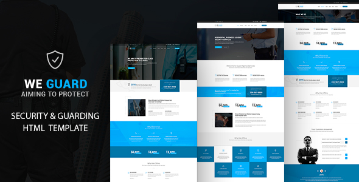

Thank you for purchasing this item. We provide support for all of our Items at http://templines.com/, but please make sure you read this documentation first. Thank you so much!
If you are not familiar with HTML and CSS, I highly recommend that you to hire a specialist. It will save your time and you will get only positive emotions while using our product.
Bootstrap makes front-end web development faster and easier. It's made for folks of all skill levels, devices of all shapes, and projects of all sizes.
assets/plugins/bootstrap/
.col-md-8
.col-md-4
.col-md-4
.col-md-4
.col-md-4
.col-md-6
.col-md-6
It effect makes waiting process while page loading less boring for the user. Please just use this code .
Touch enabled jQuery plugin that lets you create a beautiful responsive carousel slider.
assets/plugins/owl-carousel/

Use this plugin to unobtrusively add a datetimepicker, datepicker or timepicker dropdown to your forms..
assets/plugins/datetimepicker/
Use this plugin to unobtrusively add a datetimepicker, datepicker or timepicker dropdown to your forms..
assets/plugins/flexslider/
-

-

-

Smooth parallax scrolling effect for background images using CSS transforms with graceful degradation for old browsers. Parallax plugin with NO dependencies. jQuery supported. Youtube and Vimeo parallax supported.
assets/plugins/jarallax/
Your content here...
Your content here...
PrettyPhoto is a jQuery lightbox clone. Not only does it support images, it also support for videos, flash, YouTube, iframes and ajax. It’s a full blown media lightbox.
assets/plugins/prettyphoto/

Easy scroll animations for web and mobile browsers.
assets/plugins/scrollreveal/
Foo
Foo
Foo
This is Yet another megamenu for Bootstrap from Twitter. It uses the standard navbar markup and the fluid grid system classes from Bootstrap. Work for fixed and responsive layout and has the facility to include (almost) any Bootstrap elements.
assets/plugins/scrollreveal/
assets/css/master.css
Main Stylesassets/css/main.css
Theme Stylesassets/css/theme.css
Blog Stylesassets/css/blog.css
Responsive Stylesassets/css/responsive.css
Color Stylesassets/css/color.css
Responsive Stylesassets/css/responsive.css
Main js assets/js/main.js.
assets/js/separate-js/custom.js
Changelogs file changelog.txt